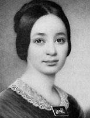

|

|

|
|
|
Author, and wife of Confederate President Jefferson Davis,
Varina Anne Banks Howell Davis was born May 7, 1826 near
Natchez, Mississippi. Varina's parents, Margaret Kempe and
William Burr Howell both came from distinguished Southern
families.
As the daughter of a wealthy slaveholding planter Varina
attended an elite girls' academy in Philadelphia for a few
terms. She also received private tutoring at home from
Harvard graduate Judge George Winchester. In 1843, Varina
met Jefferson Davis, a rich planter and slaveowner. Despite
the seventeen-year age difference, they married in February
1845.
Soon after the wedding, Jefferson left to fight in the
Mexican War. He returned in 1847 and was elected to the
United States Senate. He moved to Washington, D.C., leaving
Varina behind in Mississippi for the next year and a half.
She joined him in 1849 and spent most of the next twelve
years in Washington. There they did a lot of entertaining,
cultivating friendships with many powerful people. During
this period, the couple had four children.
Varina, who often sat in the galleries with other
congressional wives, shared many of her husband's views on
slavery, southern rights, and the Republican Party. Both
feared the consequences of civil war, but embraced their
roles as Confederate President and First Lady. Varina's
shrewd political sense and outspoken nature provoked
criticism. The Davises had two more children while in the
Confederate White House.
The Davis family faced many problems in the postwar
years. Jefferson Davis spent two years in Federal prison on
treason charges. After sending the older children to
Canada, Varina remained in Georgia with their youngest
daughter, Winnie, to be close to Jefferson. Varina helped
secure Jefferson's release in May 1867. The family reunited
in Canada and moved to England for a few years beginning in
late 1868. Although Jefferson tried his hand at several
business ventures, the family struggled to make ends meet.
In the fall of 1870, the family moved to Memphis, Tennessee
where Jefferson headed an insurance company and Varina
worked part-time as a seamstress.
After her husband died in 1889, Varina worked on a
two-volume biography of him. The book, published in 1890,
did not sell well. She moved to Manhattan in 1892 where she
worked as a journalist for the New York World and
remained loyal to the memory of the Confederate cause.
Varina Davis died October 16, 1906 in New York City. She
was buried beside her husband in Richmond.
Source: Joan Waugh, ed., Facts on File Encyclopedia of American
History: Civil War and Reconstruction, 1856 to 1869 (New York: Facts on
File, 2003), 91.
|